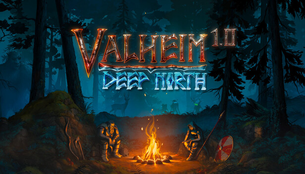

About This Website
I built this website to share a few games I enjoy and practice accessible HTML and modern CSS.

Why I enjoy games
I love exploring different worlds, completing challenges, and playing cooperative games with friends. My favorite experiences combine strategy, creativity, and teamwork.
Whether I am building in Valheim or exploring in Elden Ring, I always find something new to learn.
About the design
This website uses CSS Grid for the gallery, Flexbox for navigation, a keyboard-friendly skip link, and hover and focus effects. All images include descriptive alternative text.